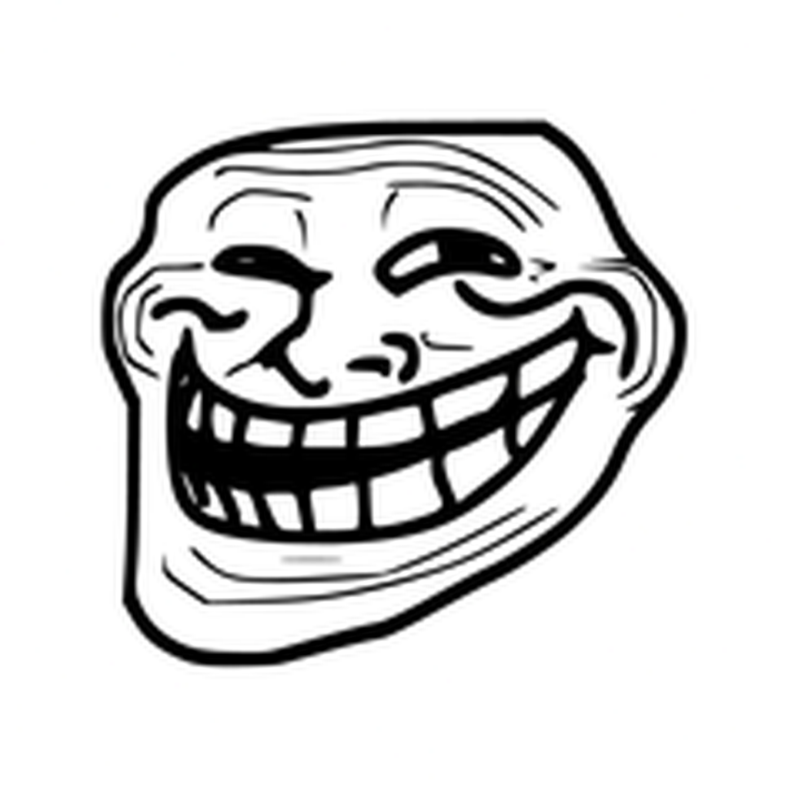

TrollSign 2.3
Подписывает IPA вашим сертификатом через zsign и устанавливает приложения по HTTPS. Хостинг уже готов — настройка не нужна.
● Ready hosting · no setup
Скачать TrollSign.ipa
Сборка без подписи. Устанавливается через TrollStore, Sideloadly или AltStore. Для установки приложений внутри TrollSign добавьте свой сертификат.
Что нового
Ready hostingРаботает сразу, без токена и GitHub.
Liquid GlassСтеклянные панели и плавающий таб-бар.
RespringПерезапуск SpringBoard, как в TrollStore.
Скрытые сертификатыТолько по долгому нажатию на Settings.
Установка
- Скачайте
TrollSign.ipa. - Откройте файл в TrollStore или установите через Sideloadly / AltStore.
- Нажмите + на вкладке Apps и выберите IPA — он подпишется и установится через готовый хостинг.
- Сертификаты: зажмите нижний значок Settings (0.55 с) → Certificates → +. Добавьте
.p12и.mobileprovision. - Опционально: Settings → Hosting → GitHub hosting, если хотите публиковать в свой репозиторий.
Как это работает
- Подпись: распаковка IPA → zsign → упаковка обратно.
- Ready hosting: IPA и
.xml-манифест загружаются на публичный HTTPS-хост, установка идёт поitms-services. - GitHub hosting: IPA → GitHub Releases, манифест → GitHub Pages (
docs/manifests/<uuid>.xml). - Respring:
SBSRelaunchAction+FBSSystemService, запасной вариант —killall SpringBoard.
Ready hosting использует catbox.moe, лимит 200 МБ на файл. Ссылки публичные, но не индексируются.